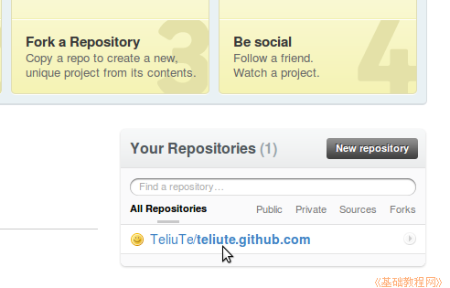
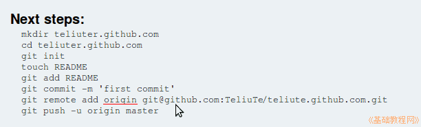

git 操作指南
作者：TeliuTe 来源：基础教程网
四、准备上传 返回目录 下一课上传前先在本地建立相关的文件；
1、创建文件
1）github 上只能使用静态网页，首先创建主页 index.html，打开终端输入命令 cd mygit 进入自己的 mygit 文件夹；
~$ cd mygit
2）输入命令 touch index.html 创建 index.html 主页文件；
~/mygit$ touch index.html
3）输入命令 echo "hello world." >>index.html 向 index.html 中添加一句 hello world.；
~/mygit$ echo "hello world." >>index.html
4）网页制作的详细操作，请参考 KompoZer 教程：http://teliute.org/linux/Tekz/index.html
2、创建别名
1）登录github，在右下角点击打开自己创建的库；

2）接着在终端输入里面的 remote 那一行的命令，给访问 github 上的库地址，起个短的别名，add 后面的 teliute 改成自己的名称；
~/mygit$ git remote add teliute git@github.com:TeliuTe/teliute.github.com.git
这样以后访问自己的库时，可以用 teliute 来代替那一长串地址；
3）如果不想要这个别名，可以用 git remote rm teliute 命令来删除别名；
本节学习了准备上传的基础知识，如果你成功地完成了练习，请继续学习下一课内容；
本教程由86团学校TeliuTe制作|著作权所有
基础教程网：http://teliute.org/
美丽的校园……
转载和引用本站内容，请保留版权信息和本站链接。